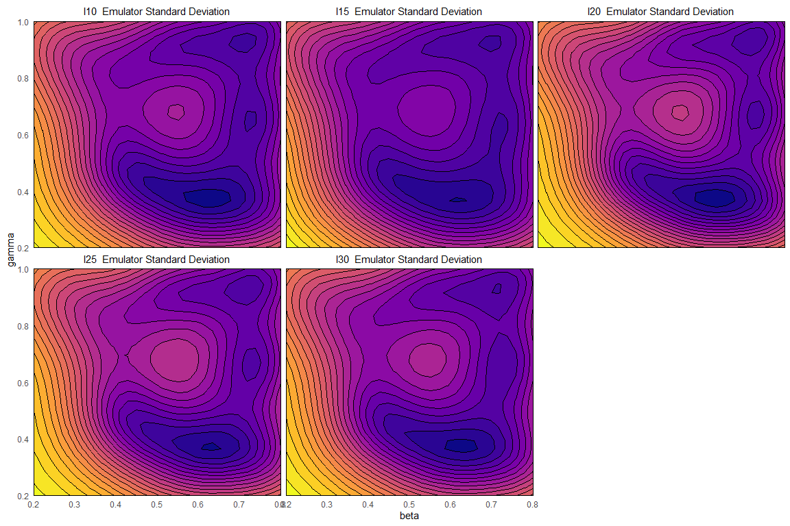

4 Constructing the emulators
To construct the emulators, we use the function emulator_from_data, which requires at least the training data, the name of the model outputs to emulate and the list of parameter ranges. In this case study we also use the optional argument ev to pass our estimates of the ensemble variability. We first define the model output names and we calculate the ensemble variability evs taking the mean of the column \(EV\) in wave0:
The function emulator_from_data uses evs to estimate the delta parameter, i.e. the proportion of the overall variance due to the ensemble variability.
ems0 <- emulator_from_data(train0, output_names, ranges, ev=evs)
ems0[[1]]
#> Parameters and ranges: beta: c(0.2, 0.8): gamma: c(0.2, 1): delta: c(0.1, 0.5): mu: c(0.1, 0.5)
#> Specifications:
#> Basis functions: (Intercept); beta; gamma; delta; mu; I(delta^2); beta:gamma; beta:delta; gamma:delta
#> Active variables beta; gamma; delta; mu
#> Regression Surface Expectation: 79.4188; 93.1408; 42.2031; -102.4974; 4.5401; 54.2205; 50.5944; -72.7635; -32.854
#> Regression surface Variance (eigenvalues): 0; 0; 0; 0; 0; 0; 0; 0; 0
#> Correlation Structure:
#> Bayes-adjusted emulator - prior specifications listed.
#> Variance (Representative): 251.1956
#> Expectation: 0
#> Correlation type: exp_sq
#> Hyperparameters: theta: 0.8621
#> Nugget term: 0
#> Mixed covariance: 0 0 0 0 0 0 0 0 0We can plot the emulators to see how they represent the output space: the emulator_plot function does this for emulator expectation, variance, standard deviation, and implausibility (more on which later). Note that all functions in the hmer package that produce plots have a colorblind-friendly option: it is sufficient to specify cb=TRUE.
for (i in 1:length(ems0)) ems0[[i]]$output_name <- output_names[i]
names(ems0) <- output_names
emulator_plot(ems0, cb=TRUE)
The emulator expectation plots show the structure of the regression surface, which is at most quadratic in its parameters, through a 2D slice of the input space. Here parameters \(\beta\) and \(\gamma\) are selected and we get a plot for each model output. For each pair \((\bar \beta,\bar \gamma)\) the plot shows the expected value produced by the relative emulator at the point \((\bar \beta,\bar \gamma, \delta_{\text{mid-range}}, \mu_{\text{mid-range}})\), where \(\delta_{\text{mid-range}}\) indicates the mid-range value of \(\delta\) and similarly for \(\mu_{\text{mid-range}}\).
To plot the emulators standard deviation we just use emulator_plot passing ‘sd’ as second argument:

We can see that the emulators reasonably show the structure of the model: the closer the evaluation point is to a training point, the lower the variance (as it ‘knows’ the value at this point). In fact, evaluating these emulators at parameter sets in the training data demonstrates this fact:
em_evals <- ems0$I10$get_exp(train0[,names(ranges)])
all(abs(em_evals - train0$I10) < 10^(-12))
#> [1] TRUEIn the next section we will define the implausibility measure while in section 6 we will explain how to assess whether the emulators we trained are performing as we would expect them to.